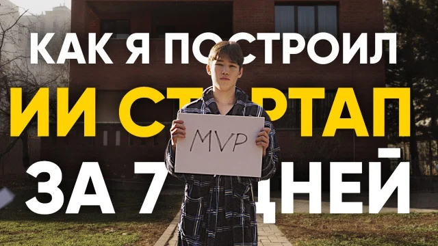

18 / kazakhstan
zhan beissikeyev.
developer + founder
i build products from problems i know firsthand.
five years in mental arithmetic — ending as a republican champion — became mindzan.com. i built it in three weeks, sold it to FOC for $10K, and now scale it as CTO of FOC World.
coding since 8th grade: bfinance.app, nFactorial, crypto payments, Telegram Mini Apps, AI monitoring, and the failed startups that made the next one sharper.
NASA finalist
Google winner
WorldSkills gold
i occasionally act too. chatly.top was built in seven days for a documentary.

find me
zhan@focworld.com